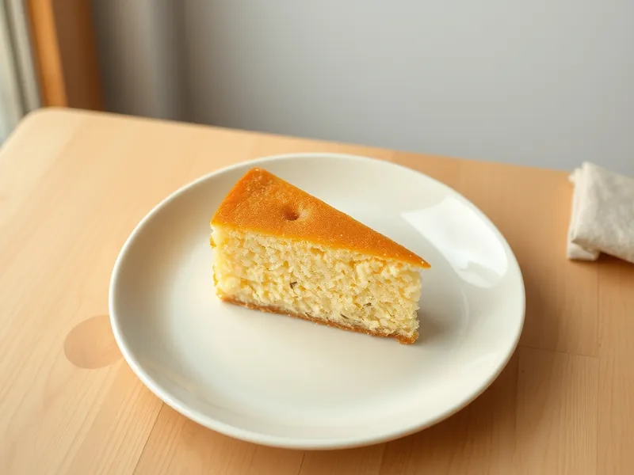

Манник на кефире
Пышный пирог из манной крупы на кефире совсем без муки
115 мин8 порц.283 ккал на порциюБ 6 · Ж 12 · У 38Русская кухня
Открыть в приложении: порции, таймеры, список покупок
Продукты на 8 порц.
- Манная крупа1,25 стак.
- Кефир1,25 стак.
- Сахар150 г
- Яйцо куриное3 шт
- Сливочное масло80 г
- Разрыхлитель2 ч. л.
- Соль1 щеп.
- Изюм по желанию3 ст. л.
Как готовить
- Смешайте манку с кефиром и оставьте на 60 минут, чтобы крупа набухла: тогда манник не хрустит на зубах.
- Взбейте яйца с сахаром и солью венчиком 2-3 минуты до лёгкой пены.
- Соедините с набухшей манкой, влейте 70 г растопленного остывшего сливочного масла, добавьте разрыхлитель и по желанию промытый изюм, перемешайте.
- Разогрейте духовку до 180 °C (средний жар). Смажьте форму диаметром 22 см оставшимся маслом.
- Вылейте тесто и выпекайте 35-40 минут до румяного верха: шпажка в центре должна выходить сухой.
- Остудите в форме 10 минут, затем выньте.
Совет. Не сокращайте время набухания манки: если поставить тесто сразу, пирог получится плотным и с хрустящими крупинками.